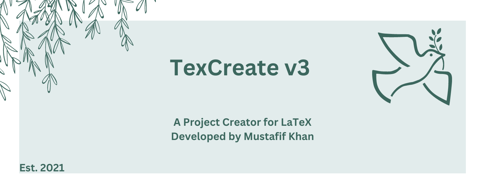

What is TexCreate?
TexCreate is a LaTeX project creator developed by Mustafif Khan in 2021 and is actively being maintained as my main portfolio project. The project started from my laziness; I found setting up LaTeX documents annoying whenever I had something new to do (I use LaTeX over word processors). I created a program to write a document for me using some prebuilt templates embedded in the program. When I wrote TexCreate, I found it very useful, and it saved me a lot of time, such as when I used it for a Physics tutorial with the Lachaise template.
When TexCreate was first written, much of the code was written using Github copilot when I got my technical preview. However, as the versions came out, I found myself using an AI less and less, with TexCreate v3 with the whole project totaling around 4000+ lines of code only having one thing written by AI,cprint!().
This project is for anyone who wants to save time creating LaTeX documents! Let’s install the application and begin creating!!!!
Installing TexCreate
At the time of writing, TexCreate v3 is currently in beta 8
Install Rust
To install TexCreate you will need the cargo package manager which means you will need to install
rust. The recommended way of installation is using rustup, which can be found here and
will allow you to install Rust for your particular operating system.
Install TexCreate
To install TexCreate, we will need to use cargo and install the latest beta (beta 8) of TexCreate version 3:
$ cargo install texcreate --version 3.0.0-beta.8
With TexCreate installed, it is also recommended to have a LaTeX compiler installed as well, you may install
texlive with their install instructions found here.
Initializing TexCreate
Unlike in the previous TexCreate versions, TexCreate version 3 focused on template modularity and instead of
having templates hardcoded in the program, they are instead stored locally in your system as JSON files (done using the texcore library).
To allow this, we will
need to create the layout using the init command.
The layout we are talking about looks like the following:
# where the directory is created
$HOME/.texcreate/
# keeps metadata for mkproj templates
repo.toml
# stores mkprojects first party templates
mkproj/
*.json
# stores custom templates saved by texcgen
custom/
*.json
To create this run the following command:
$ texcreate init
The init command will create the .texcreate directory and get the latest repo of templates from the
mkproj_texcgen repository.
For example, at the time of writing the current repo release is v1, and if we use the list command we can see
the following output of templates:
# to see list of custom templates use flag --repo custom
$ texcreate list
TexCreate Repo: v1
Number of Templates: 6
======TEMPLATES======
=> lachaise: A perfect way to write assignments
=> dictionary: Create your own dictionary!
=> basic: A Basic LaTeX Document
=> theatre: Create your own script for a play
=> code: Code Documentation Focused
=> news: Write your own newspaper article
=====================
Creating a new Config
Now that our texcreate directory is created, we can start working on TexCreate projects and to begin that process
is creating a new configuration file (the config is a toml file, with texcreate.toml being the default filename).
To create a new config, we will use the new command which will show us a prompt to get started as shown:
$ texcreate new
Use default project settings? (yes/no)
no
Enter Project Name:
Project
Enter Template Repo:
mkproj
Enter Template Name:
basic
Enter config file name (default: texcreate.toml):
Successfully created `texcreate.toml`
Let’s look inside texcreate.toml:
packages = []
[project]
proj_name = "Project"
template = "basic"
repo = "mkproj"
[metadata]
author = "author"
date = "date"
title = "title"
fontsize = 11
papersize = "letterpaper"
doc_class = "article"
maketitle = true
Let’s go through each part of texcreate.toml, starting with the field packages.
The package field will be where you may add extra packages to be included inside the project,
for example the basic template doesn’t contain the listings package, so we may add that, as shown:
packages = ["listings"]
[project]
...
[metadata]
...
Next comes the [project] section which contains three fields, the project name, the template and the repo where
the template is located. In our example we have our project name as Project, the template we chose is basic and
this can be found from the mkproj repo.
Lastly we would like to customize the prebuilt templates to contain the metadata we would like it to have, and
that is where the [metadata] section comes in. This section uses texcore::Metadata and contains all relevant fields
like author, date, title of the document, etc.
We should change the [metadata] section to fit our needs, for example I’ll change it to the following:
...
[metadata]
author = "Mustafif Khan"
date = "2022-2023"
title = "The Basic Template"
fontsize = 11
papersize = "a4paper"
doc_class = "article"
maketitle = true
Congratulations you have created a new TexCreate config, you are now one step closer to building a project!
Building a LaTeX Project
Creating a TexCreate project has the following structure (we will use the project name Project as an example)
Project/
# a configuration to compile TexCreate projects
compiler.toml
# The main source code file
Project.tex
# where pdfs will be stored
out/
# where to place files from `\input{}`
include/
# contains anything related to packages
structure.tex
Let’s build our project using texcreate.toml that was created in the last section using the build command:
# to build with different filename, use the -f flag
$ texcreate build
Successfully created `Project`
We can now look at Project/Project.tex to see how the basic template looks like (spoiler alert: it’s basic…)
\documentclass[11pt, a4paper]{article}
\title{The Basic Template}
\author{Mustafif Khan}
\date{2022-2023}
\input{include/structure}
\begin{document}
\maketitle
\pagenumbering{arabic}
\newpage
\end{document}
To look at the packages that are with our document, we will need to look at Project/include/structure.tex as shown:
\usepackage{amsmath}
\usepackage{listings}
We can see the package listings added to the file, so we are now able to proceed to the next section to compile our project.
Compiling a LaTeX Project
To compile a TexCreate project you will need to be in the root of the project and use the compile command.
The compile command reads the compiler.toml configuration and will run the appropriate LaTeX compiler and flags.
Let’s take a look at compiler.toml:
compiler = "pdflatex"
proj_name = "Project"
flags = []
clean = true
mode = "Output"
Here’s a breakdown of each of the fields:
compiler: The name of the LaTeX compiler to use (default:pdflatex)proj_name: The project name (do not change or project will not compile)flags: Any extra flags to add to the compiler commandclean: Whether to remove theauxandlogfile from theoutdirectory after compilingmode: Whether to run the process usingoutput()orspawn()"Output": Executes the child process and collects the output (doesn’t see task)"Spawn": Executes the child process returning a handle to it (able to see task)
If we run texcreate compile with the current configuration , it would be equivalent to running the following:
$ pdflatex -out-directory=out Project
Let say we also wanted to use the xelatex compiler instead,add the flag -interaction=nonstopmode and change the mode to
"Spawn", then the configuration would look like the following:
compiler = "xelatex"
proj_name = "Project"
flags = ["-interaction=nonstopmode"]
clean = true
mode = "Spawn"
Let’s run texcreate compile in the root directory of our project:
$ texcreate compile
This is XeTeX, Version 3.141592653-2.6-0.999993 (TeX Live 2022/dev/Debian) (preloaded format=xelatex)
restricted \write18 enabled.
entering extended mode
(./Project.tex
LaTeX2e <2021-11-15> patch level 1
L3 programming layer <2022-01-21>
(/usr/share/texlive/texmf-dist/tex/latex/base/article.cls
Document Class: article 2021/10/04 v1.4n Standard LaTeX document class
(/usr/share/texlive/texmf-dist/tex/latex/base/size11.clo))
(./include/structure.tex
(/usr/share/texlive/texmf-dist/tex/latex/amsmath/amsmath.sty
For additional information on amsmath, use the `?' option.
(/usr/share/texlive/texmf-dist/tex/latex/amsmath/amstext.sty
(/usr/share/texlive/texmf-dist/tex/latex/amsmath/amsgen.sty))
(/usr/share/texlive/texmf-dist/tex/latex/amsmath/amsbsy.sty)
(/usr/share/texlive/texmf-dist/tex/latex/amsmath/amsopn.sty)))
(/usr/share/texlive/texmf-dist/tex/latex/listings/listings.sty
(/usr/share/texlive/texmf-dist/tex/latex/graphics/keyval.sty)
(/usr/share/texlive/texmf-dist/tex/latex/listings/lstmisc.sty)
(/usr/share/texlive/texmf-dist/tex/latex/listings/listings.cfg))
(/usr/share/texlive/texmf-dist/tex/latex/l3backend/l3backend-xetex.def
(|extractbb --version))
No file Project.aux.
(/usr/share/texlive/texmf-dist/tex/latex/base/ts1cmr.fd) [1] (out/Project.aux)
)
Output written on out/Project.pdf (1 page).
Transcript written on out/Project.log.
The project `Project` successfully compiled!